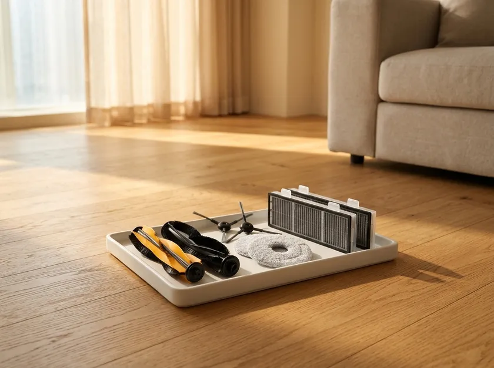
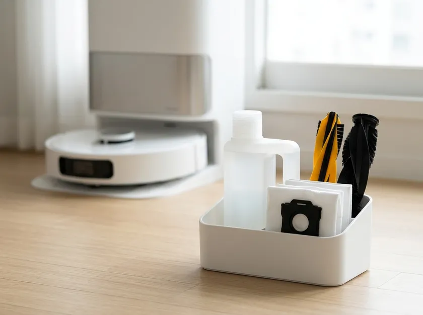
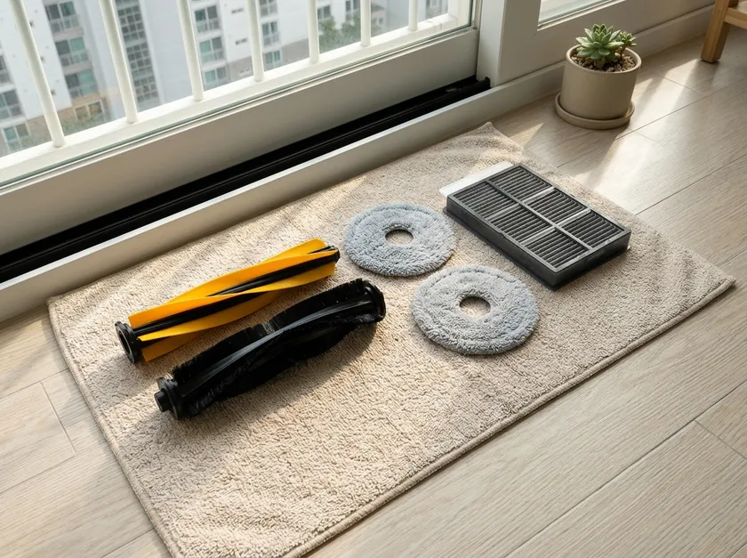

드리미 (Dreame)
주방 하부장 빌트인 직배수 드리미 X50s Pro Master 습기·소모품 관리법
글·구성: 제이상점 · 기종별 1:1 호환 실물 점검 · 교체 주기 비교표 · 스마트스토어 패키지 안내

핵심 관리 · 선택 체크포인트
- 싱크대 하부장이나 다용도실 가구장 안에 직배수 스테이션을 매립해 사용하는 드리미 X50s Pro Master(X50 Master)는 가구장 내부 공기 순환이 제한적이므로 더스트백 밀폐력과 필터 완전 건조가 특히 중요합니다.
- 빌트인 가구장 내 블랙 칼라 더스트백 실링과 상단 탭 필터 교대: 직배수 가구장 안은 물걸레 온수 세척 시 약간의 온기와 습기가 머물 수 있어, 본체 먼지통의 다크그레이 필터가 덜 마른 상태로 들어가면 가구장 문을 열었을 때 꿉꿉한 냄새가 나기 쉽습니다.
- 빌트인 직배수 스테이션(X50s Pro Master) 핵심 소모품 관리표: 가구장 매립 환경에서 청소 효율과 위생을 동시에 챙기는 점검 기준입니다.
- 상세페이지에서 보유 모델명(X50s Pro Master / X50s Pro Ultra / X50 Master)과 세제 포함 여부를 확인해 선택해 보세요.
- 주방 빌트인장 상판 트레이 점검과 거실 소파 옆 털 엉킴 체크: 주방 아일랜드나 빌트인장 상판에 원목 트레이를 두고 새 더스트백과 듀오브러시, 필터를 꺼내 점검하면 허리를 오래 숙이지 않고도 빠르게 교체할 수 있습니다.
실물 부품 디테일 · 관리 구성 이미지




부품 규격 · 점검 기준표
| 점검 부위 | 드리미 X50s Pro·Master 규격 | 빌트인 가구장 관리 포인트 |
|---|---|---|
| 원추형 듀오브러시·3암 브러시 | 엉킴 방지 원추형 듀오브러시 1쌍 + 3암 사이드브러시 | 한쪽 끝으로 모인 머리카락 제거 및 고무·모 탄성 점검 |
| 블랙 칼라 더스트백 | 고무 실링 슬라이딩 블랙 플라스틱 칼라 봉투 | 가구장 내 냄새 방지를 위해 꽉 차기 전 여유 있게 교체 |
| 원형 회전 걸레·다크그레이 필터 | 그레이 극세사 원형 패드 + 화이트 상단 탭 필터 | 외부 통풍 매트에서 완전 건조 후 교대 장착 및 세제 잔량 확인 |
💡 교체 주기가 겹치는 필터·브러시·물걸레·더스트백은 단품 배송비를 여러 번 내기보다 드리미 X50s Pro Master 기간별 세트(3개월·6개월·1년)로 미리 구비해 두면 물세척 후 24시간 교대 건조까지 끊김 없이 관리할 수 있습니다.
자주 묻는 질문 (FAQ)
Q. 주방 하부장 빌트인 직배수의 원추형 듀오브러시·3암 브러시 규격과 관리 기준은 무엇인가요?
A. 엉킴 방지 원추형 듀오브러시 1쌍 + 3암 사이드브러시 규격을 사용하며, 한쪽 끝으로 모인 머리카락 제거 및 고무·모 탄성 점검 기준으로 점검·교체하면 청소 효율을 안정적으로 유지할 수 있습니다.
Q. 주방 하부장 빌트인 직배수의 블랙 칼라 더스트백 규격과 관리 기준은 무엇인가요?
A. 고무 실링 슬라이딩 블랙 플라스틱 칼라 봉투 규격을 사용하며, 가구장 내 냄새 방지를 위해 꽉 차기 전 여유 있게 교체 기준으로 점검·교체하면 청소 효율을 안정적으로 유지할 수 있습니다.
Q. 주방 하부장 빌트인 직배수의 원형 회전 걸레·다크그레이 필터 규격과 관리 기준은 무엇인가요?
A. 그레이 극세사 원형 패드 + 화이트 상단 탭 필터 규격을 사용하며, 외부 통풍 매트에서 완전 건조 후 교대 장착 및 세제 잔량 확인 기준으로 점검·교체하면 청소 효율을 안정적으로 유지할 수 있습니다.
제이상점 1:1 검수 추천 패키지 · 구매 안내
메인 추천 구성
대표 구성 참고가 77,000원대 (옵션·쿠폰별 스마트스토어 결제 화면 기준)
1년 세트6개월 세트3개월 세트
![[정품] 드리미 세제 전용 세척액 세정제 소모품 X40 X50 X60](../../assets/img/dreame-cleaner-product-3adea154.webp)
☑️ 주문 전 확인해 두면 좋은 제이상점 안심 포인트
· 기종별 1:1 전용 규격 검수: 모델명·연식에 맞는 호환·정품 구성을 검수해 오주문 불안을 줄였습니다.
· 해외직배송 미리 주문 팁: 중국 구매대행·해외직배송 상품이므로 마지막 여분 1개를 꺼내 쓰는 시점에 개인통관고유부호와 함께 여유 있게 주문해 두시면 훨씬 경제적인 비용으로 끊김 없이 교체하실 수 있습니다.
· 기종별 1:1 전용 규격 검수: 모델명·연식에 맞는 호환·정품 구성을 검수해 오주문 불안을 줄였습니다.
· 해외직배송 미리 주문 팁: 중국 구매대행·해외직배송 상품이므로 마지막 여분 1개를 꺼내 쓰는 시점에 개인통관고유부호와 함께 여유 있게 주문해 두시면 훨씬 경제적인 비용으로 끊김 없이 교체하실 수 있습니다.
📖 더 많은 가정 내 사용 스토리와 상세 후기가 궁금하시다면
📱 네이버 블로그 모바일 원문 보기 ↗